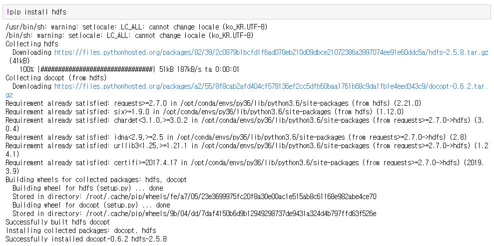
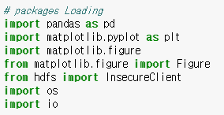
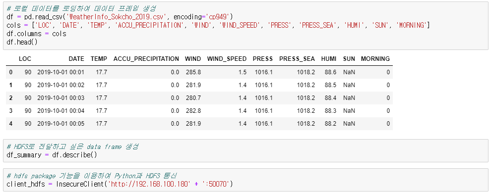
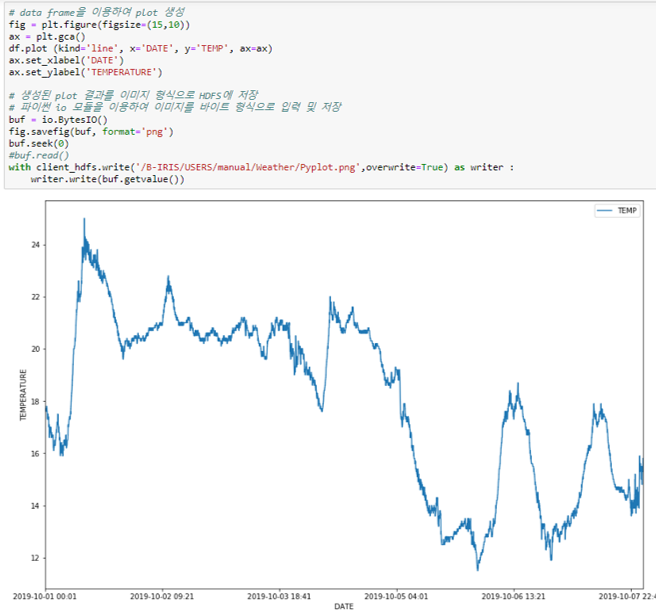
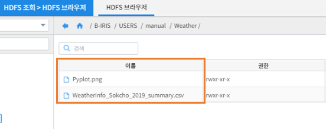

Jupyter Notebook을 활용한 분석과 분석결과를 HDFS에 저장하기¶
개요¶
본 문서는 Jupyter Notbook으로 수행된 분석 결과 데이터와 모델 객체를 HDFS에 저장하는 방법을 기술하고 있습니다.
파이썬 hdfs 패키지 설치 및 실행¶
IRIS에서 제공하는 Jupyter Notebook에서 분석한 결과 생성된 data frame은 파이썬의 hdfs 패키지를 이용하여 HDFS서버에 적재할 수 있습니다.
hdfs 패키지는 파이썬과 Hadoop 분산 파일 시스템을 연결하여 파일 시스템 관리 기능, 개별 파일을 읽고 쓰는 등의 기능을 제공합니다.
기존에 hdfs 패키지가 설치되지 않은 경우 해당 패키지 설치가 필요합니다.
Jupyer Noteobok에서 ! + “command” 실행 시 리눅스 쉘 커맨드를 실행할 수 있습니다.
파이썬 패키지 import¶
파이썬에서 data frame, 이미지 생성 및 HDFS에 연결하기 위한 필수 패키지 내역은 다음과 같습니다.
| No | 패키지명 | 설명 |
|---|---|---|
| 1 | pandas | 데이터를 data frame 형태로 조작/연산 할 수 있습니다. |
| 2 | matplotlib | 데이터를 차트나 플롯 형태로 그릴 수 있습니다. |
| 3 | hdfs | Hadoop 파일 시스템 클라이언트를 이용하여 파이썬과 HDFS의 연결 및 파일 시스템 관리/전송 기능을 제공합니다. |
| 4 | io | 파이썬에서 I/O 파일 객체를 처리하기 위한 기능을 제공합니다. |
해당 패키지를 import 합니다.
data frame 생성 및 HDFS 저장¶
분석 결과를 data frame 형태로 생성, Client 모듈을 호출하여 IRIS HDFS에 연결합니다.
{kind=link}
해당 코드 내에 <IRIS HDFS 디렉토리/파일명> 을 입력합니다.
- with client_hdfs.write(“IRIS의 HDFS위치+저장 파일명.csv”) as writer:
- 데이터프레임 변수명.to_csv(writer)
Plot 이미지 생성 및 HDFS 저장¶
파이썬 matplotlib 패키지를 이용하여 data frame으로부터 plot을 생성합니다.
파이썬 io 모듈을 이용하여 이미지 형식의 파일을 byte 형식으로 변환, HDFS에 저장할 수 있습니다.
[HDFS 브라우저] 에서 확인¶
[HDFS 조회] > [HDFS 브라우저]에서 해당 파일이 적재된 것을 확인할 수 있습니다.
